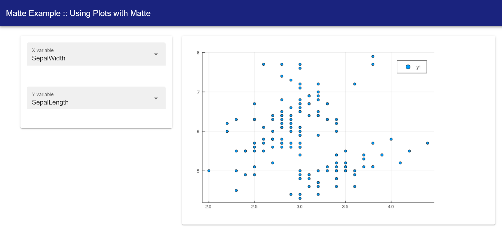

Including plots
This guide walks you through how to include a plot, created by the Plots.jl library, into your Matte app.
Because plots can be slow to create and show, you should also read the guide on long-running computations for tips on how to create user interfaces that only re-calculate plots when requested by the user.
At the moment, only plots created by Plots.jl are supported.
Example app
This part of the guide uses the built-in app called plot_example. Create a copy locally to work on by running:
matte_example("plot_example", "plot_example")Incorporating a Plots.jl plot in your UI
Incorporating a plot into your UI is as easy as using the plots_output function. This takes a single argument, which is the id of the output (which, of course, corresponds to a function in the Server module).
You can see this element in the main_panel of the provided example, where we have given it the id of my_plot:
function ui()
sidebar_layout(
side_panel(
...
),
main_panel(
...
plots_output("my_plot")
)
)
endPlots on the backend
As with all Matte outputs elements, we need a function in the Server module called my_plot, since this is the id we gave to plots_output. This function should return a Plots.jl plot.
In the included example, we are using an input variable called use_dist to allow the user to pick a distribution to sample from. This isn't particularly interesting, but provides a little interactivity for the example.
function my_plot(use_dist)
if use_dist != nothing
if use_dist == "Normal"
y = Random.randn(10)
elseif use_dist == "Exponential"
y = Random.randexp(10)
else
y = rand(10)
end
plot(1:10, y)
end
endThe first part of the function checks whether the user has made a selection for use_dist, if so, it draws to values from the chosen distribution and saves the values in y.
The key part is:
plot(1:10, y)This creates a Plots.jl plot, plotting 1:10 on the x-axis and our sampled y values the y-axis.
This function creates and returns a Plots.jl plot. Alternatively, if the user hasn't yet selected a distribution to draw from, the function returns nothing, which tells Matte not to update the UI. This is a helpful pattern for plots because it allows you to delay re-rendering of the plot until certain conditions are met (more on that in the next two guides).
Trying it out
Run the app (by include/includeting the app.jl file and running run_app(PlotsExample)). Once you select a species to filter by, you'll see something like this:

The plot may take a moment to show, particularly if you haven't used Plots in your session yet, as Julia has to compile Plots before it can display anything.
In the next two guides, we look at how to have persistent server-side vairables and how to change the UI from within other functions. This is an introduction to the helpful pattern that follows in the final guide handling long-running computations